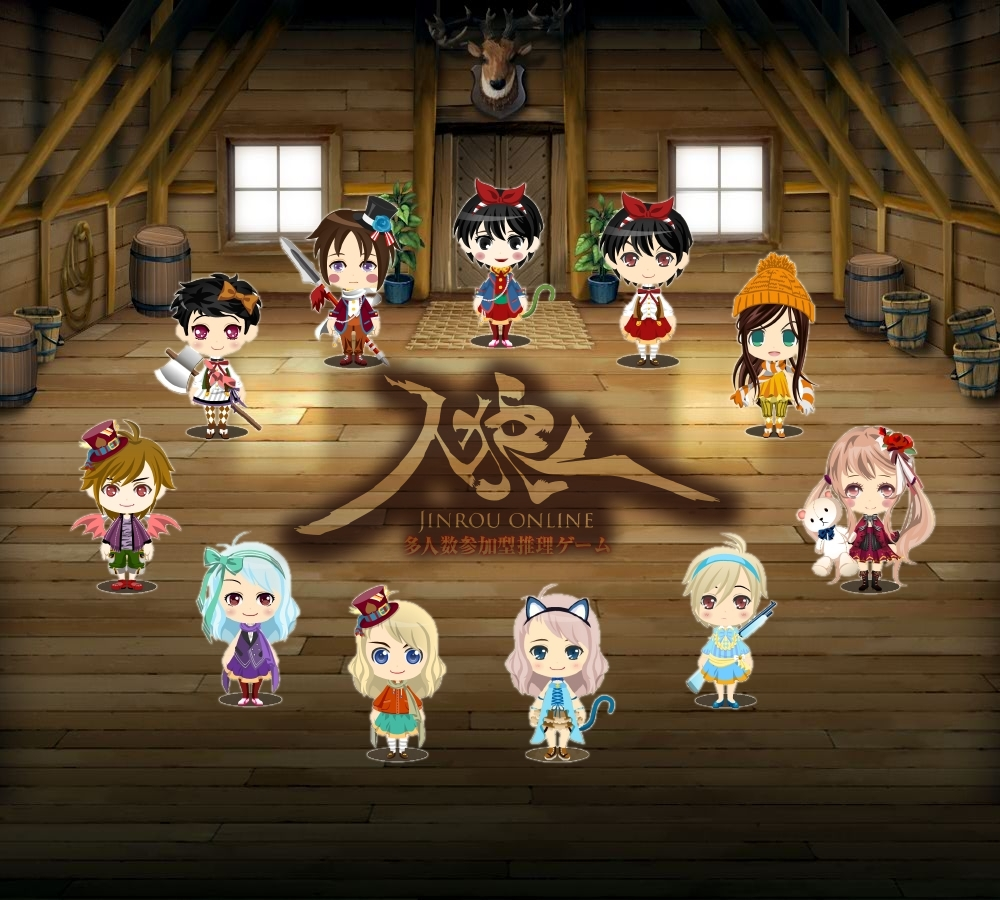
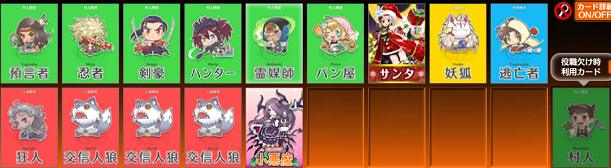
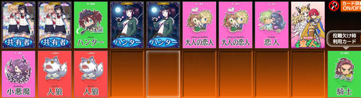

◇ 短期人狼 ◇
| yahoo人狼 | 2016/01下旬 ～ 2016/03/31 | ||||||||||||||||||||||||||||||||
はじめてオンライン人狼をした鯖です 人数多いのには手が出せず、ほぼ11Aに参加していました  |
|||||||||||||||||||||||||||||||||
| えけけ鯖 | 2016/04/01 ～ | ||||||||||||||||||||||||||||||||
yahoo人狼のサービス終了を受けて、えけけさんが作った鯖 ハンゲの人狼パーティーが始まるまでは、ここで毎日のように11Aをやってました ハンゲ人狼終了後、しばらくお世話になっていましたが、 11A(この鯖では12Aってなってる)戦績：237勝 213敗 勝率：52.67% 17Aはハンゲ人狼終了後、何度かやった程度です… |
|||||||||||||||||||||||||||||||||
| 人狼パーティー(ハンゲーム) | 2016/07/28 ～ 2019/03/28 | ||||||||||||||||||||||||||||||||
ここができてから、えけけ鯖に居た人たちで、こちらに流れる人も居ました。 はじめは11Aばかりしていたのですが、途中から12Bを中心にするようになり、  いろんなレギュが組めるので、狂人村、カップル村、etc…  終盤は、ほぼ18人カオスで遊んでいました。
よくやっていた小悪魔のいる方は18人カオスはスクショなかったです(´・ω・｀)
総日数：30262(生存日数：20741 (56歳！) ) |
|||||||||||||||||||||||||||||||||
| やさしい人狼 | 2019/03/29 ～ | ||||||||||||||||||||||||||||||||
鯖自体は前から合ったのだけど、 移動当初は、通常村にも参戦していましたが、 |
|||||||||||||||||||||||||||||||||

Copyright(c)2020 りゅ all rights reserved.